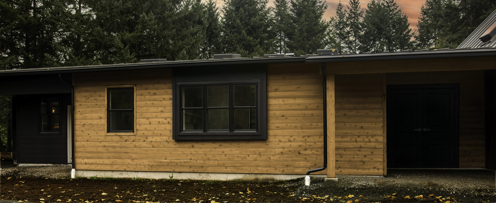
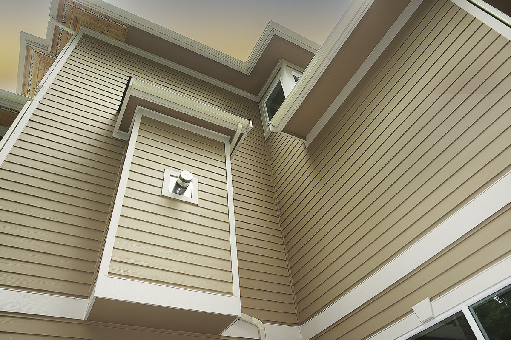

Seattle-Tacoma siding contractor
Siding replacement for wet Northwest homes.
Breeze Siding replaces failing siding, installs James Hardie and fiber cement exteriors, and repairs the trim, flashing, and dry rot details that protect Seattle and Tacoma area homes.
Seattle sidingReplacement, repair, and wet-weather details
Tacoma sidingLocal siding replacement in the South Sound
Siding replacementFull exterior scopes, trim, windows, and flashing
Hardie costsWhat changes the square-foot price
Dry rot repairSoft trim, sheathing, and water-damage planning
- 15+
- years experience
- 500+
- completed projects
- 5.0
- Google rating
Free estimate
Start with a smarter exterior estimate.
Tell us what is happening with the home. We will help you sort out the siding, repair, material, and timing details that belong in the first conversation.
Featured exterior direction
A siding project should solve more than the surface.
The best exterior projects combine durable materials, moisture-aware details, and a clean finish. That can mean new siding, trim repair, window integration, flashing upgrades, or a more complete plan for the home envelope.

Breeze Siding LLC
Local siding work for homes that have to handle Northwest rain.
A good siding contractor should help you understand the whole exterior, not just the boards on the wall. We help Seattle, Tacoma, and Puget Sound homeowners compare fiber cement, James Hardie, cedar, engineered wood, dry rot repair, trim, paint, and window details before the project starts.
- Siding replacement, James Hardie installation, cedar, engineered wood, and Hardie panel accents
- Dry rot repair, window flashing, trim, paint, and deck details coordinated with siding work
- City-specific guidance for Seattle siding replacement and Tacoma siding projects
Exterior Services
Start with siding, then solve the details around it.

Siding Replacement & Installation
Replace worn, damaged, or outdated siding with fiber cement, cedar, engineered wood, and exterior systems suited to Northwest homes.
View siding services Seattle siding replacement
James Hardie & Fiber Cement
Plan a durable exterior with Hardie siding, panel accents, trim details, and installation choices that fit wet Puget Sound weather.
View Hardie installer Compare Hardie costs
Exterior Painting
Weather-resistant exterior paint and trim detail that help protect your investment and sharpen curb appeal.
View painting services
Decks
Deck construction and exterior upgrades that make outdoor areas more usable, durable, and inviting.
View deck services
Repairs
Targeted exterior repairs for siding damage, soft trim, flashing gaps, and leak-prone areas before they grow.
Dry rot warning signsNot sure what your exterior needs?
Send a few details about the home and we will help you decide what belongs in the estimate.
Start with a free estimateProject Gallery
Real work from homes around the Puget Sound.